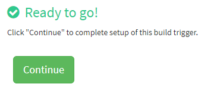

Chapter 5 Docker Pipeline for Reproducible Research
Workshop version: 1.0.0
Last updated: 2018-03-23
TinyUrl Links:
5.1 Overview
Datakind Singapore has been using docker to help reproduce environments that were used during DataDive events. Apart from versioning the files/scripts that were used during analysis, we also version the environments where we ran such scripts. In this workshop, we’ll walkthrough how we use docker to promote reproducibility.
5.2 Prerequisites
In order to follow along in this workshop, you would need to have an account in github, quay.io, and play-with-docker.
If you don’t have yet, kindly create an account in the following platforms:

5.3 Task 1: Setup Dockerfile
Before a DataDive event, we try to engage with the NGO team representatives to know what data tools the volunteers will be using during the event. Based on previous DataDive events, RStudio and Jupyter Notebooks tend to be popular among volunteers. In this workshop, we’ll try to build a docker image for a python jupyter notebook. To save time, we already prepared a dockerfile and related demo materials for you.
Login to your github using your account.
Then, kindly fork the following repository to your github account:
https://github.com/DataKind-SG/contain-yourself
Once fork is done, “contain-yourself” repo should now be reflected in your github account.
Open and examine your dockerfile:
https://github.com/<github_account>/contain-yourself/tree/master/workshop/demo_docker_setup/DockerfileReplace <github_account> with your github account

In this dockerfile, we’re using the jupyter/minimal-notebook base image. This contains the corresponding OS and minimal python installation to support jupyter notebook. We also reference the version of the base image, so that we won’t be affected in case the version of the base image increments. This is so that we can still reproduce that actual base image used when the data analysis was done.
We also keep track of the python package versions that will later be used when building our jupyter image. You can find the list inside the requirements file:
https://github.com/<github_account>/contain-yourself/tree/master/workshop/demo_docker_setup/requirements.txtNow that our dockerfile is ready, we can proceed in syncing github to a continuous integration (CI) process.
5.4 Task 2: Setup CI and Build Docker Image
Login to your quay.io account and go to the repository homepage: https://quay.io/repository/
Create a new repository

Set it up as follows:
Click “Create Public Repository”
Authorize coreos

Select the organization under which the repository lives. In this workshop, use your github account. Then, click continue.

Select the contain-yourself repository under your github account.
Then, click continue.

Configure the trigger so that it will only build the container image if there’s a new change in the master branch. Then, click continue.

Select the Dockerfile under workshop: /workshop/demo_docker_setup/Dockerfile
Then, click continue.
Select the context where our dockerfile is located: /workshop/demo_docker_setup
Then, click continue.
There’s no need for a Robot Account as we’re using a public base image.
Just click continue.

Whew! We’re ready to go.
Click continue.
Click the link to return to your repository page

Initiate a new build by clicking “Start New Build” button
Click “Run Trigger Now”
Select master branch. Then, click “Start Build” button.
You should see the flashing dots indicating that the build has started.

Once the build is complete , click the label section .

Click the setting button on the latest tag and click “Add New Tag”
Enter the version as the tag name. We use semantic versioning (https://semver.org/) MAJOR.MINOR.PATCH
Enter 1.0.0
Then, click “Create Tag” button

You should now see a new tag (version) displayed.
This is how we version our environments to promote reproducibility later.
Now that we have a versioned notebook image (environment),
You can proceed in curating our volunteers’ deliverables and confirm if you can reproduce their analysis.
5.5 Task 3: Curate Deliverables
Trivia: In the previous DataDive, we have a dedicated team of deliverable curators.
We call them our Docker Captains. They help confirm and ensure that our volunteers’ analysis/outputs are reproducible. In this task, we’ll put on our Docker Captain hat and curate some jupyter notebooks.
Docker captains usually have docker installed in their laptops during the DataDive and use that for curation. However in this workshop, we’ll use play-with-docker so that you don’t need to setup docker locally in your machine.
Login to Play with Docker: https://labs.play-with-docker.com/
Click Start

Click ADD NEW INSTANCE

In the console, git clone your contain-yourself github repo.
Type the following:
git clone https://github.com/<your github account>/contain-yourself.gitThen, hit enter.
Type the following:
docker run -p 80:8888 -v /root/contain-yourself/workshop/demo_notebooks:/home/jovyan/work quay.io/<your quay.io account name>/workshop-notebook:1.0.0Then, hit enter.
It will start pulling the image from quay.io.

Once your jupyter token is ready, click on the port 80 link
In the previous step, we had mapped our container’s port 8888 to the host’s port 80.

A new tab will open for jupyter.
Enter your jupyter token accordingly and click Log in.

You should now see 2 notebooks and 1 json data file.
Click the notebook of volunteer 1: analysis_from_volunteer_1.ipynb

In volunteer 1’s notebook, click Cell.
Then, click Run All.

Scroll to the bottom of the notebook.
You should see the following stacked bar chart generated:

Woohoo! We just successfully reproduced Volunteer 1’s analysis.
Note: Ideally, the docker captain will now proceed to add meta data on this notebook to indicate which version of the environment was used to run this successfully. However, we’ll skip that in this workshop.
Close the browser tab of volunteer 1’s notebook.
Click the notebook of volunteer 2: analysis_from_volunteer_2.ipynb
In volunteer 2’s notebook, click Cell.
Then, click Run All.

In the 3rd code cell, you should see this:
Oh no! We don’t have bokeh in the current jupyter environment version.
We can’t reproduce Volunteer 2’s analysis.
O Captain! my Captain! Don’t be downcast
Your will is strong and the 4th task is your last
5.6 Task 4: Resolve Environment Issue
Note: We’re fortunate that this issue is pretty straightforward to fix.
We’re just missing a package (bokeh).
In other scenarios, docker captains face more complex issues than this (e.g. version incompatibility, missing OS binaries, etc.). It’s always helpful when the author of the deliverable is still around so that such issues can be resolved quicker.
In this workshop, we kept it simple.
Go back to your contain-yourself github repo and open requirements.txt:
https://github.com/<your github account>/contain-yourself/blob/master/workshop/demo_docker_setup/requirements.txtClick Edit

Write bokeh and its corresponding version (0.12.4) in the requirements.txt
Scroll down. Add info. Then, commit changes.
Go back to your build page in quay.io:
https://quay.io/repository/<your quay.io account>/workshop-notebook?tab=buildsNotice that quay.io automatically picked up our change and started building.

Once the build is complete
 , click the label section
, click the label section  .
.
Click the setting button on the latest tag and click “Add New Tag”
Note: Ensure that the latest is really the latest. Check the Last Modified stamp.
If it’s not, try refreshing the page.

Enter the version as the tag name. We use semantic versioning (https://semver.org/) MAJOR.MINOR.PATCH
Enter 1.0.1
Then, click “Create Tag” button

You should now see a new tag (version) displayed.

Version 1.0.1 is the version of our jupyter image that has the bokeh package.
Go back to your play-with-docker console.
If the jupyter process is still running, kill it by hitting CTRL+C.
That should shutdown the jupyter kernels accordingly.
Type the following:
docker run -p 80:8888 -v /root/contain-yourself/workshop/demo_notebooks:/home/jovyan/work quay.io/<your quay.io account name>/workshop-notebook:1.0.1Then, hit enter
It will start pulling the new image (version 1.0.1) from quay.io.
Once your jupyter token is ready, click on the port 80 link
A new tab will open for jupyter.
Enter your jupyter token accordingly and click Log in.
You should now see 2 notebooks and 1 json data file.
Let’s open the notebook where we had issue previously. Click the notebook of volunteer 2: analysis_from_volunteer_2.ipynb
In volunteer 2’s notebook, click Cell.
Then, click Run All.

Scroll to the bottom of the notebook.
You should see the following stacked bar chart generated:
Congratulations! You fixed the environment issue and you’re now able to successfully reproduce Volunteer 2’s analysis.
You have the skill of a DataDive Docker Captain.
Checkout DataKind Singapore meetup event for volunteering opportunities: